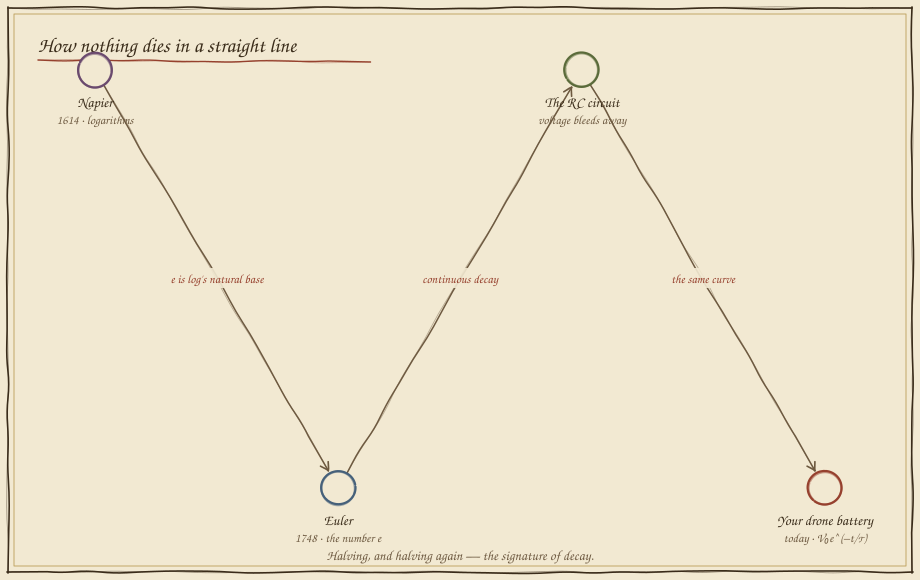
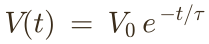
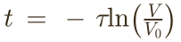

Curves of Decay
In which a drone trusts its fuel gauge and falls out of the sky anyway, and a Scottish laird's twenty-year obsession explains exactly why.
The gauge that lies near the end
Your drone's battery reads half-full. Common sense says: half the charge, half the flight left. So you plan the return trip on a straight line — charge falling evenly with time. Set your planned flight and launch.
The straight line and the truth agree at the start and betray you at the end. Real charge doesn't fall by a fixed amount each second — it falls by a fixed fraction, so the last stretch drains far faster than the line promised. Anything that loses a set percentage per tick — batteries, radio signals, cooling coffee, capacitors — bends the same way. To fly safely you must know the shape of the bend.
Twenty years to tame multiplication
The curve of decay and the tool that measures it were born from the opposite problem: not death, but the sheer labour of multiplying big numbers by hand — for astronomy, navigation, and the tides.


One number sets the whole curve
Every decay has a single fingerprint: τ (tau), the time it takes to fall to about 37% — one e-th — of where it started. Give me τ and I can draw the entire future. Below are real discharge readings from the battery; slide τ until Euler's curve lies right on top of them.

When will it hit the floor?
Now the real question a flight computer asks a hundred times a second: given the curve, when does the charge cross the safe-landing line? Reading it off the bent curve is guesswork — so invert it with Napier's logarithm, which turns the curve into an exact clock. Set the cutoff; the log gives the time; then flip to a log scale and watch the curve become a straight line.

What you can now build
Battery-life estimators, signal filters that fade old readings, the charge-and-discharge of every capacitor in the robot, sensor smoothing, even the "temperature" that cools a learning algorithm into its answer — all of them are V₀e−t/τ and its inverse, the logarithm. Once you can read τ and invert with a log, decay stops being a surprise and becomes a schedule. Next, in Folio 08, we face the last enemy of Stage II: a sensor that gives a different answer every time you ask.
Field exercise: pour a hot drink and log its temperature every minute against room temperature. Plot the gap. You will find the same τ and the same curve that lives in your drone — Newton's law of cooling is the identical exponential, and your kitchen just measured e.
continue to folio 08 — trusting a noisy sensor return to the codex map